Blender – Shapekeys
Os objectos do tipo Mesh, Curve, Lattice e Surface podem armazenar várias formas (shapes) que podem animadas através de keyframes. Podem ser utilizadas para criar uma "biblioteca" de formas dentro do mesmo objecto que podem ser animadas com diferentes tempos e combinadas entre si. O funciomento das shapekeys é fácil de compreender. A malha inicial, não deformada, é a shape "Basis". A partir desta forma "Basis" pode criar diversas variações e pode ainda criar variações a partir de outras variações! Estas formas ficam armazenadas e podem ser animadas através de keyframes. Não pode adicionar ou apagar vértices, as ShapeKeys armazenam as posições dos vértices e não a criação/eliminação de vértices.
As Shapekeys são uma ferramenta extremamente útil, sobretudo para animação. Imagine uma biblioteca de expressões faciais...
1- Comece uma nova cena no Blender, limpe o cubo que surge automaticamente. Adicione um plano e subdivida-o para ficar com um aspecto similar ao apresentado abaixo.
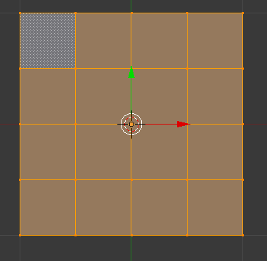2- Volte a Object Mode. Vá ao painel Object Data e, na janela Shape Keys, clique no sinal + para adicionar a primeira Shapekey. Automaticamente é criada uma key de nome “Basis” que vai armazenar a forma da malha sem deformação.
Com a Shapekey “Basis” seleccionada, clique novamente no sinal + para adicionar uma nova Shapekey. No exemplo abaixo, demos o nome “dobra” a esta nova shapekey.
Com a shapekey “dobra” seleccionada, passe para Edit Mode e altere a forma do plano seguindo o exemplo na imagem abaixo.
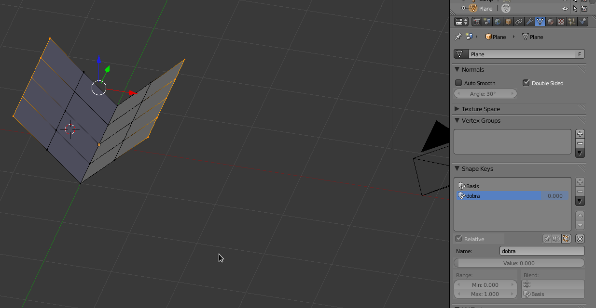3- Passe para Object Mode. O plano vai retornar à posição original porque a “Basis” é a primeira forma. Se seleccionar a Shapekey “dobra” e modificar o Value irá ver a sua forma a alterar-se.
Coloque o Value de “dobra” a 0. Seleccione a Shapekey “Basis” e adicione uma nova shapekey com o nome “dobra2”. Siga o exemplo abaixo.
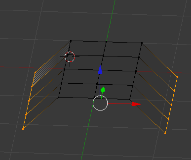 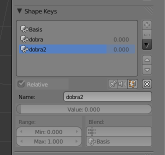4- Agora temos 3 Shapekeys. A original “Basis” e duas que foram construídas a partir da forma original: “dobra” e “dobra2”. No entanto, estas podem ser combinadas, utilizadas em simultâneo...
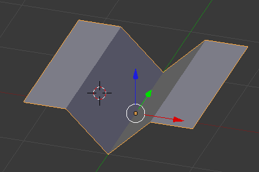 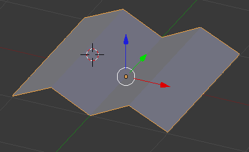
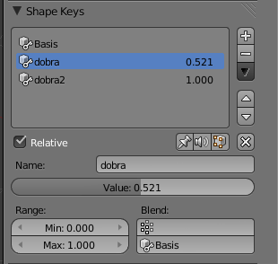
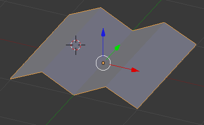
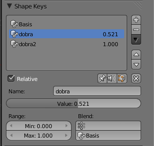
O Value determina o grau de influência da Shapekey, sendo que 0 significa nenhuma alteração. O Range (min/max) define o valor que é possível alterar na caixa Value.
Através de keyframes no valor de Value pode animar as suas shapekeys!
5- Para animar as suas shapekeys, pode inserir keyframes directamente na janela de Value. Depois, estas keyframes também existem e podem ser manipuladas/editadas no Graph Editor.
No entanto, existe uma ferramenta especialmente concebida para animar e manipular shapekeys. Na janela DopeSheet, active a opção ShapeKey Editor para poder ver as Shapekeys existentes no objecto e adicionar/remover/mover keyframes.
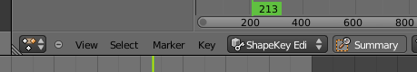 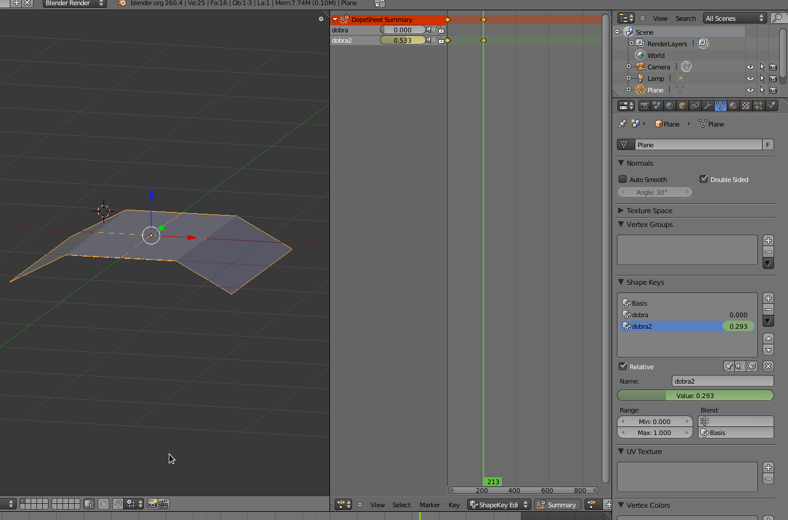